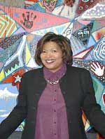
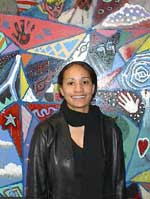
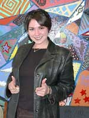
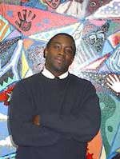
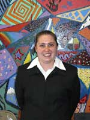
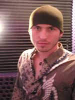
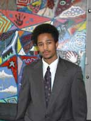

|
 Wendy
Talley |
Wendy Talley, who just started October 2003, is excited to begin as the new Executive Director at The Spot. She is frequently quoted saying, “There’s no other place I’d rather be!” Wendy will have an updated bio soon! |
|
 Natalie Beal |
Natalie Beal, a.k.a. “Nat”, is a Denver native who has her BA in Political Science and Urban Studies from University of Colorado at Boulder. Natalie loves to laugh and hang out. She loves the beach, the sun, summer, and hates the cold. Her favorite activity taking naps in the afternoon after eating a big lunch. She loves working with young adults and it makes her happy to have laughter around me. Natalie is exploring the possibility of going to Law school. Natalie has been with The Spot since May 2002. |
|
 Kelly
Murphy |
Kelly Murphy, a.k.a. “GED lady”, is originally a California girl, who has been in Denver for the last 10 years. She has her BA in Psychology and Theater from the University if Denver, with a minor in Sociology. She is currently pursuing her MBA (Masters of Business Administration) at the University of Denver, Daniels College of Business, with a concentration in Public Policy and Leadership. Kelly loves theater, puzzles, astrology, bright colors, and games. She hopes to create dramatic change in the world through community action. Kelly is the OG of the Spot staff and has been with the organization since January 2001. |
|
 Demetrious
Jenkins |
Demetrious Jenkins, a.k.a.
“D”, is a Denver native who received his BA in Communications
from Nebraska Wesleyan University with a concentration in TV/Radio Broadcasting,
and a minor in Spanish. He is a fanatic about almost all sporting activities
and enjoys working with youth and transporting them to professional venues.
The holiday he likes the best is thanksgiving, because it is a great time
for spending time with his 4 children, Alleya, Khadijah, Demetrious Jr.,
and Mahagani. Some of his life ambitions include coaching at the high
school level in football or basketball. He also intends to start a youth
center that develops young African American fathers. He has a true foundation
in GOD and plan to continue to give back to ALL youth, not only those
in his community. Demetrious has been with The Spot since April 2003.
|
|
 Heidi Grove |
Heidi Grove is originally from Washington DC. She has her BA from Metropolitan State College with a degree in Psychology, a Minor in human services, and a specialty in High Risk Youth Studies. Heidi is a published psychologist with her study on alcohol use. She enjoys the outdoors, traveling, and enjoys working with young adults. Heidi is an Avalanche fanatic. When Heidi grows up, she wants to get her Masters in Secondary Education and Guidance Counseling, and work at an alternative high school. Heidi has been with The Spot since July 2003. |
|
 Chris Guillot |
Chris Guillot is a Denver native who has his BA in music industry studies from The University of Colorado at Denver, with a concentration in Audio engineering and music boniness. Chris is an accomplished musician and regularly plays venues in Denver. Chris aspires to produce his album within the next year. He enjoys cooking, astronomy, and working with youth in the music department. Chris has been with The Spot since August 2003.
|
|
 Tony Corley |
Tony Corley is in his first year at the Community College of Aurora, and plans to study electronics at Pitkins Tech in the future. He likes to hang out and go to the movies on the weekends. Tony’s greatest ambition is to have a book of his own quotes. His current favorite quote is “My greatest fear is not death, but what I did in life.” He enjoys being at The Spot and interacting with youth. He hopes to learn to break-dance during his 1-year tenure at The Spot. Tony has been with The Spot since October 2003. |
Patrick
Jiner |
Patrick Jiner is current attending the Community College of Denver for Business Administration. Patrick enjoys music and snowboarding and is very happy to help youth in this community get into college. |
|
Melissa
Quezada
|
|
Sara Intern |